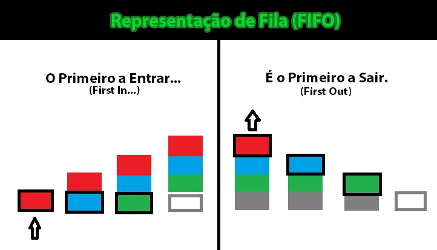
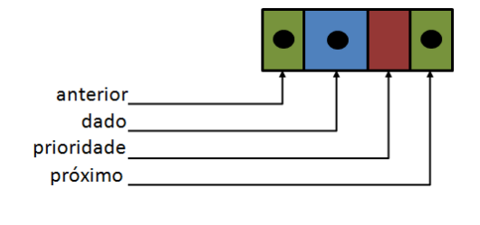
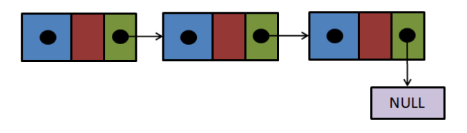
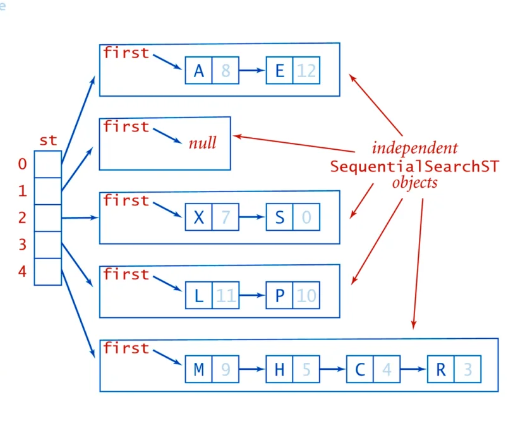

Fila de Prioridades Encadeada FIFO
O que é uma Fila de Prioridades Encadeada FIFO?
Uma fila de prioridades encadeada segue o princípio FIFO (First In, First Out) em combinação com prioridades. Elementos com prioridade mais alta são atendidos primeiro, mas entre elementos com a mesma prioridade, o que foi inserido primeiro é atendido antes.
Na programação, filas de prioridades são muito úteis quando precisamos processar tarefas de acordo com sua importância, mas mantendo a ordem de chegada para tarefas com a mesma prioridade. Isso é comum em sistemas como gerenciamento de processos em um sistema operacional ou filas de emergência em hospitais.
Como Funciona?
A fila de prioridades encadeada é formada por nós, onde cada nó tem um valor, uma prioridade, e uma referência para o próximo nó. Quando um novo elemento é inserido, ele é colocado na posição correta de acordo com sua prioridade. Se dois elementos têm a mesma prioridade, o primeiro a entrar é o primeiro a sair (FIFO).
Estrutura de uma Fila de Prioridades Encadeada
Cada nó da fila de prioridades encadeada possui um valor, uma prioridade, e uma referência para o próximo nó. Os nós são ordenados pela prioridade, e o último nó aponta para null.
Adicionando um Elemento na Fila de Prioridades (Enfileirar)
Ao adicionar um elemento na fila de prioridades, ele é colocado na posição correta com base em sua prioridade. Se outro elemento já tiver a mesma prioridade, o novo elemento será colocado após ele, mantendo a ordem de chegada.
1. class No {
2. public int valor;
3. public int prioridade;
4. public No proximo;
5.
6. public No(int valor, int prioridade) {
7. this.valor = valor;
8. this.prioridade = prioridade;
9. this.proximo = null;
10. }
11. }
12. class FilaPrioridadeEncadeada {
13. private No cabeça;
14. public FilaPrioridadeEncadeada() {
15. this.cabeça = null;
16. }
17. public void enfileirar(int valor, int prioridade) {
18. No novoNo = new No(valor, prioridade);
19. if (this.cabeça == null || this.cabeça.prioridade > prioridade) {
20. novoNo.proximo = this.cabeça;
21. this.cabeça = novoNo;
22. } else {
23. No atual = this.cabeça;
24. while (atual.proximo != null && atual.proximo.prioridade <= prioridade) {
25. atual = atual.proximo;
26. }
27. novoNo.proximo = atual.proximo;
28. atual.proximo = novoNo;
29. }
30. }
31. }
Explicação
O novo nó é inserido na posição correta de acordo com sua prioridade. Se outro nó tiver a mesma prioridade, o novo nó é colocado após ele, garantindo a ordem FIFO.
Removendo um Elemento da Fila de Prioridades (Desenfileirar)
Para remover o elemento de maior prioridade, o nó que está na cabeça da fila é removido. Se dois nós tiverem a mesma prioridade, o primeiro a ser inserido é o primeiro a sair.
1. class FilaPrioridadeEncadeada {
2. private No cabeça;
3.
4. public FilaPrioridadeEncadeada() {
5. this.cabeça = null;
6. }
7. public int desenfileirar() {
8. if (this.cabeça == null) {
9. throw new Exception("Fila está vazia");
10. }
11. int valorRemovido = this.cabeça.valor;
12. this.cabeça = this.cabeça.proximo;
13. return valorRemovido;
14. }
15. }
Explicação
O nó que está na cabeça da fila, que tem a maior prioridade, é removido. Se houver nós com a mesma prioridade, o que foi inserido primeiro será removido primeiro, seguindo o princípio FIFO.
Exemplo Completo
Vamos ver um exemplo completo de como criar uma fila de prioridades encadeada, adicionar e remover elementos.
1. public class ExemploFilaPrioridadeEncadeada {
2. public static void Main(string[] args) {
3. FilaPrioridadeEncadeada fila = new FilaPrioridadeEncadeada();
4. fila.enfileirar(10, 2);
5. fila.enfileirar(20, 1);
6. fila.enfileirar(30, 3);
7.
8. Console.WriteLine(fila.desenfileirar()); // 20 (maior prioridade)
9. Console.WriteLine(fila.desenfileirar()); // 10
10. Console.WriteLine(fila.desenfileirar()); // 30
11. }
12. }